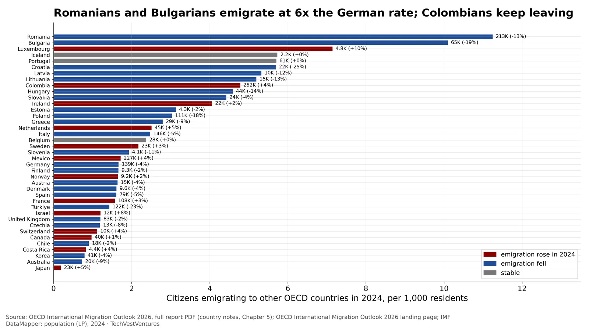

Q8. Who Emigrates

Citizens of each OECD or EU country who moved to another OECD country in 2024, per 1,000 residents of their home country, with the year-on-year change (country notes of the OECD International Migration Outlook 2026, published November 12 2026; population from the IMF). The highest emigration rates are in Romania (11.2 per 1,000), Bulgaria (10.1 per 1,000), Luxembourg (7.1 per 1,000), Iceland (5.7 per 1,000), Portugal (5.7 per 1,000). In absolute numbers the biggest flows were Colombians (252,000, +4%), Mexicans (227,000, +4%), Romanians (213,000, −13%), Italians (146,000, −5%) and Germans (139,000, −4%). Most European outflows fell in 2024, led by Croatia (−25%), Türkiye (−23%), Bulgaria (−19%) and Poland (−18%); rises were concentrated in Luxembourg (+10%), Israel (+8%), Japan (+5%), Netherlands (+5%), Costa Rica (+4%).
- Germany: 1.7 per 1,000; United Kingdom: 1.2; France: 1.6; Italy: 2.5.
- Top destinations (OECD): Spain is the first destination for Colombians (67%), Italians (31%), Irish (20%), Dutch (23%), British (22%), Norwegians (21%) and Swedes (17%); Germany is first for Romanians (36%), Poles (38%), Bulgarians (43%) and Turks (48%).
- The OECD figures count moves into other OECD countries only, so emigration to Gulf states, China or other non-OECD destinations is missing; the United States and New Zealand have no comparable country note.
- German emigration in the OECD data (139,000 to OECD countries) is lower than Destatis' total of German citizens leaving (270,000 in 2024), because Destatis counts all destinations and all deregistrations (see B14).
Note: Rates divide OECD-recorded inflows of each nationality by the home country's total resident population (IMF), which includes foreign residents, so they slightly understate emigration per citizen. Inflow data use each destination country's own definitions; figures are rounded by the OECD.
Sources: OECD International Migration Outlook 2026, full report PDF (country notes, Chapter 5) OECD International Migration Outlook 2026 landing page IMF DataMapper: population (LP), 2024